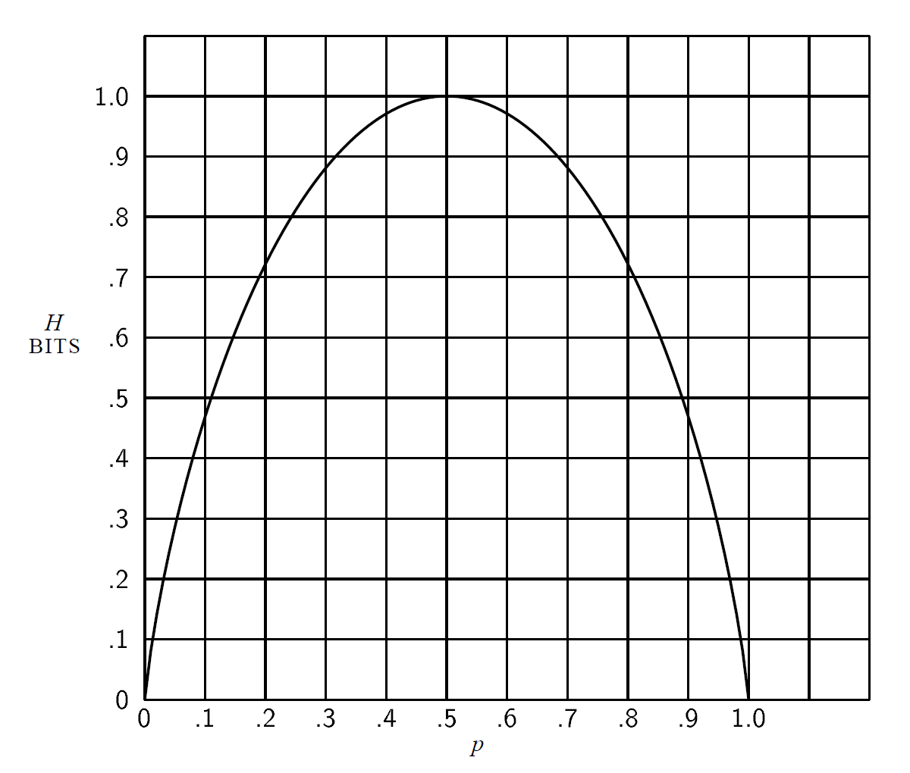

概念与定理 Concepts & Theorems#
假定有一个可能事件集，这些事件的发生概率 \(p_{1},p_{2},...,p_{n}\)。这些概率是已知的，但关于将会发生哪个事件，我们也就知道这么多了。我们能否找到一种度量，用来测量在选择事件时涉及多少种“选择”，或者输出中会有多少不确定性？
如果存在这样一种度量，比如说 \(H(p_{1},p_{2},...,p_{n})\)，那要求它具有以下性质是合理的:
\(H\) 应当关于 \(p_{i}\) 连续。
如果所有 \(p_{i}\) 都相等，即 \(p_{i}=\frac{1}{n}\)，则 \(H\) 应当是 \(n\) 的单调增函数。如果事件的可能性相等，那可能事件越多，选择或者说不确定性也更多。
如果一项选择被分解为两个连续选择，则原来的 \(H\) 应当是各个 \(H\) 值的加权和。
定理： 唯一能够满足上述三条假定的H具有如下形式:
\(H=-K\sum_{i=1}^{n}p_{i}log~p_{i}\)
其中 \(K\) 是一个正常数。
形如 \(H=-\Sigma p_{i}log~p_{i}\) 的量（常数 \(K\) 只不过是为了度量单位的选择）在信息论中扮演着核心角色，作为信息、选择和不确定性的度量。将会看出，\(H\) 的这一形式就是统计力学中某些公式中定义的熵，其中 \(p_{i}\) 是一个系统处于其相位空间中单元格 \(i\) 的概率。
如果存在两种可能性，概率分别为 \(p\) 和 \(q=1-p\)，则熵为:
\(H=-(p~log~p+q~log~q)\)
将它作为 \(p\) 的函数画在下图中。

量 \(H\) 有许多重要性质，这些性质进一步表明了它作为选择度量或信息度量的合理性。
当且仅当所有 \(p_{i}\) 中只有一个的取值为 \(1\)，其他均为 \(0\) 时，\(H=0\)。仅当我们可以确定输出结果时，\(H\) 消失。否则，\(H\) 为正数。
对于一个给定 \(n\)，当所有 \(p_{i}\) 都相等（即 \(\frac{1}{n}\)）时，\(H\) 达到最大值 \(log~n\)。这种情景也正是我们在直觉上感受的最不确定情景。
当在既定信息结构下，各备选结果的概率分布已近似均匀（即熵接近最大），且无法通过额外信息进一步降低不确定性时，理性决策应承认信息不可得性。在此情形下，引入外生随机机制（如抛硬币及其他等概率随机选择）作为决策规则，是一种无偏且一致的策略。
一个联合事件的不确定性小于或等于各个不确 定性之和。
假定有两个随机事件 \(x\) 和 \(y\)，它们不一定相互独立。对于 \(x\) 可以取到的任意特定值 \(i\) 存在一 个 \(y\) 取 \(j\) 值的条件概率 \(p_{i}(j)\)。我们将 \(y\) 的条件熵 \(H_{x}(y)\) 定义为关于每个 \(x\) 值，\(y\) 的熵的加权平均，加权值为取得特定 \(x\) 值的概率。除非 x 和 y 是独立事件，否则 y 的不确定性会因为知道 x 值而下降，当两者独立时，该不确定性保持不变，即 \(H(y) \ge H_{x}(y)\)。